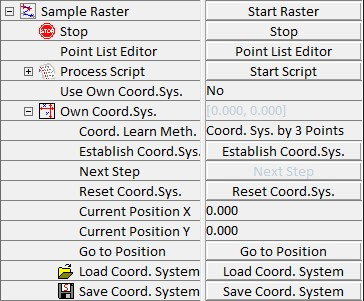

此参数组与点查看器结合使用。在点查看器中，可以在样品上定义多达上千个点，并在这些点上执行自动化测量。样品栅格参数组用于定义应在指定点上执行的脚本。此外，栅格的执行从此参数组启动，点查看器也可以从此处打开。
更多信息（操作指南）：

启动栅格
此触发按钮启动当前定义的栅格（即在点查看器中定义的点列表）的执行。
点列表编辑器
此按钮打开点查看器窗口。在此窗口中可以定义组成栅格的点。
处理脚本
请参阅处理脚本部分。
使用自定义坐标系
将此设置为开启以启用在用户定义的坐标系下使用。
自定义坐标系
启用在栅格中使用用户定义的坐标系。